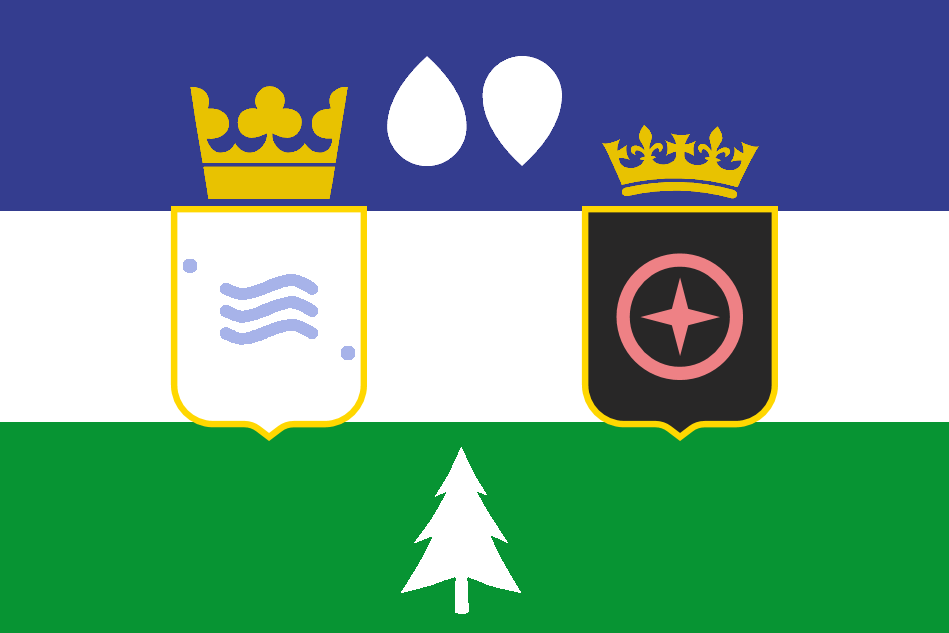
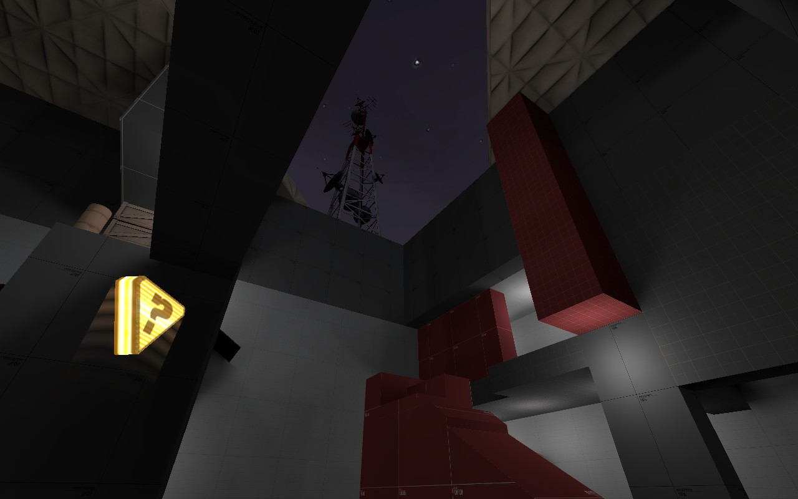

About the Author
Hey, My name is Luke Munnely O'Reilly, though either surname can be used either independently or together.
I am a 20 year old College/University student (I went to Institute of Technology Sligo but as of April 2022, it became part of a multi-college program to make multiple colleges around western Ireland into one giant campus for specializing on different fields, aka the Atlantic Technological University, ATU).
I am currently finished my first year of College in the course "Bachelors in Computers and Science Game Development" level 7.
I am a beginner at writing stories, a novice artist stuck with traditional forms of art. I like skateboarding, motorsports (G'wan Mclaren F1!), Go-karting, and music.
I am also fond of the aul pint too, though, give me some credit, it's mostly cider, but otherwise I have a tea addiction.
Once I finish college, I intend to relearn Irish, my Gaelic language, as my country of Ireland has a fairly bad education system for teaching it. Which is a shame for such a beautiful language, the language of Saints and Scholars after all.
Example of my work include:
A concept flag related to the mod: Equestria at War

A Sketch of the Island of Greneclyf from EAW as a mockup for the Cover Image
A screenshot of a map I made in Hammer-Map Editor, a oftware used and by Valve for designing maps for IP's such as Teamfortress 2 and Half-Life 2. The map is called CP_Facility
